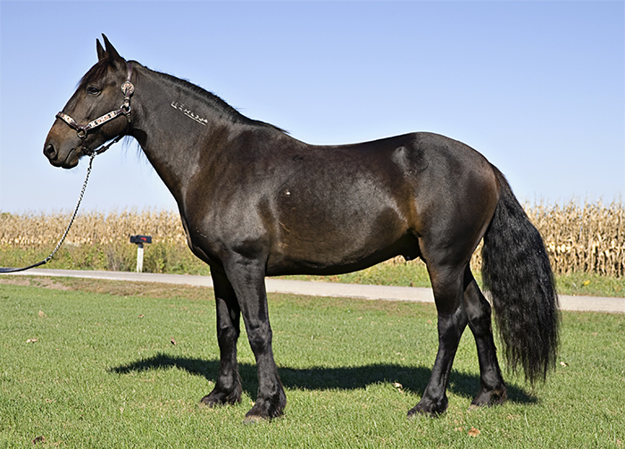

Įdomybės apie arklį
- Arkliai - xszaislai.lt
arkliai gera kaina internetu. Didelis prekių pasirinkimas, saugus pirkimas, prekių pristatymas į namus ar biurą. Įsigykite prekes internetu pigiau. - 10 įdomių faktų apie arklius, kurių galbūt nežinojote: kuo ...
1970-aisiais buvo pastebėta, kad grynakraujai fryzų arkliai, besivaržantys kinkinių varžybose, prarado dalį savo ištvermės, tad Nyderlandų veisėjas Jurgen Hillner juos ėmė kryžminti su arabų žirgais, pasižyminčiais puikiomis darbinėmis savybėmis. - arkliai - LRT
Asociacija vienija Lietuvos sunkiųjų ir stambiųjų žemaitukų arklių augintojus. įkurta 1997-08-04, asociacijos prezidentas, Vigantas Indrašius, asociacijos administratorius Agnė Indrašienė - Apie arklius - Arkliai
Arkliai būna labai įvairių dydžių – nuo mažiausio pasaulio arklio Falabela, kurio aukštis ties gogu tesiekia 76 cm, iki didžiausio iš visų veislių šairo. Šairo eržilas turi būti ... - Arkliai, žirgai skelbimai | Plius.lt
Arkliai, žirgai (181) + Įdėti skelbimą Įsiminti skelbimai (0) Skelbimų: 181 . Atnaujinti viršuje. Naujausi viršuje Atnaujinti viršuje Pigiausi viršuje Brangiausi viršuje. Skuodo r. rugsėjo 1 d. 2. Perkame arklius . Įmonė nuolat superka įvairaus įmitimo arklius, moka PVM. ... - Pradinis puslapis - Arkliai.com
Pries mūsų akis dainuojantys arkliai! Tiesa, šios dainis ritmą gali parinkti tu pati. Pirmasis arkliukas dainuoja "bum čiči bum" ir yra labai mielas. Antrasis arklys turi storą balsą ir dainuoja "baaammmm bammmmmmm" kas suteikia jam žavumo. Trečiasis tai jau turbūt ne arklys, o kumelė, nes turi ploną balselį ir dainuoja "uuuu uuuu ... - Arkliai, žirgai flora, fauna - Skelbiu.lt
Antrą gyvenimo šansą gavę arkliai mėgaujasi gyvenimu: čia išnaudoja ne juos, o jie. 55. 246. Labas rytas, Lietuva 2020.06.25 07:37. Labas rytas, Lietuva I d. Arklių slėnyje – antras šansas nebereikalingiems gyvūnams: čia jie gali elgtis kaip nori. 246. 20:59. 147. - Įdomybės apie arklį - Arklio muziejus
Ar žinote kokia arklio galia (AG) yra lygi kiek kilovatų (ag kw ar kw ag)? Kilovatai į arklio galios skaičiuoklė - atsakymai čia.. - Arabo-Fryzas - Arkliai.com
Kai arkliai stovi ant labai šlapių grindų arba ganosi drėgnose ganyklose, gali prasidėti kanopos varlės puvimas. Jos grioveliuose susirenka šlapia, dvokianti gelsvai balta masė. Jei laiku nepašalinamos priežastys ir negydoma, gali išsivystyti kanopos vėžys. Varlę reikia gerai nuvalyti, pašalinti nešvarumus, į griovelius ... - arkliai žaidimai - žaisti nemokamai žaidimas žaidimas
Arkliai.com. 1 month ago . Karys su savo žirgu - kliūtinio jojimo pionieriai - šoka per griovį. ... See More See Less. Photo. View on Facebook

Lietuvių Susisiekite: ATVYKITE EKSPOZICIJOS IR RENGINIAI MOKOME ARKLIO MUZIEJAUS ISTORIJA VISKAS APIE ARKLĮ LT RU EN Muziejaus lankymas Kaip atvykti? Ekskursijos Pramogos Krautuvėlė Maitinimas Niūronių apylinkės Apie Arklio muziejų Ekspozicijos Parodos Renginiai Virtualios parodos Apie ekspozicijas Arklio muziejuje Edukacinės programos Amatai Būreliai Pasiūlymai Apie edukacines programas Muziejaus įkūrimas Raida Žygiai arkliais Nuorodos Apie Arklio muziejaus istoriją Kilmė ir prijaukinimas Arklių veislės Anatomija Tautosaka Įdomybės Testai Apie arklį Kilmė ir prijaukinimas Kilmė Laukiniai arkliai Arklinių šeima Prijaukinimas Arklių veislės Žemaitukai Stambieji žemaitukai Lietuvos sunkieji Anatomija Arklio plaukas Arklio anatomija Tautosaka Etiologinės ir mitologines sakmės Mįslės Patarlės ir priežodžiai Įdomybės Įdomybės apie arklį Testai Lengvesnis testas
Įdomybės apie arklį
Paskutinis
Laukinius gyvulius žmonės pradėjo jaukinti dar akmens amžiaus mezolito epochoje. Iš pradžių jie prisipratino šunis, kates, vėliau ožkas, karves.
Iš pradžių arklius žmonės medžiojo mėsai, vėliau prisijaukino ir pakinkė, paskui sėdo ant jų jodinėti.
Drauge
Nuo pirmųjų mūsų eros amžių Lietuvoje gyvavo paprotys laidoti raitelį su jo ištikimuoju žirgu. Archeologai, tyrinėdami dabartinėje Lietuvos teritorijoje esančius pilkapius ir kapinynus, atidengė nemažai pirmojo tūkstantmečio kapų. Juose surasta žmonių palaikų, kurie vienoje duobėje palaidoti kartu žirgu arba jo kūno dalimis (galva, kojomis). Ši laidojimo tradicija gyvavo ilgai. Žinoma, kad Lietuvos didžiųjų kunigaikščių Kęstučio ir Algirdo laidotuvėse buvo sudeginti ir jų mylimiausi žirgai.
Yra išlikusių senovinių kapų, kuriuose palaidoti tik arkliai: Veršvuose (Kaune) Nemuno dešiniajame krante, Graužiuose (Kėdainių raj.) dešiniajame Nevėžio krante, Nendriniuose (Marijampolės raj.), Šešupės dešiniajame krante.
Šeimos narys
Lietuvių kalboje senoliai žodį „mirti“ taikė žmogui, bitei ir arkliui. Sakydavo: mirė kieme vaikas nieko, gims kitas, bet jei mirė kieme arklys į kiemą ateina badas: nei arsi, nei sėsi, nei kermošiun važiuosi
Arkliui geriausias šienas; o avižų sauja kaip vaikui šokoladas…
Jeigu nuo kiemo iki bažnyčios mažiau nei 3 km, save gerbiantis ūkininkas niekada sekmadienį nekinko arklio…
Į kalną tempiamame pakrautame vežime ūkininkas nesėdės, o išlipęs stums jį, kad Sarčiui ar Bėriui būtų lengviau…
Kaip ir mes
Anot rusų fiziologo I. Pavlovo, arkliai yra įvairių temperamentų: flegmatikai, melancholikai, cholerikai, sangvinikai
Šeimininkams!
Kai arklys ramus, jo pulsas 28-44 dūžiai per minutę, o kai susijaudinęs ar sunkiai dirba 130! Jeigu ant arklio rėkiama, jo pulsas dažnėja.
Pralenkė
Arklio klausa ir uoslė daug geresnės už žmogaus. Arkliai puikiai skiria ne tik žmogaus balsą, bet ir intonaciją, o užuodžia tiesiog visu kūnu.
Gurmanai
Arkliai turi išlavėjusį skonio pojūtį. Jie labai išrankūs maistui: niekada neėda sugedusių avižų, nuodingų augalų, negeria vandens, turinčio blogą kvapą, kenksmingų medžiagų priemaišų.
Sveikuoliai
Arklius Prancūzijoje nuo seno kartkartėmis šerdavo svogūnais. Tikėta, kad tuomet arkliai tampa sveikesni ir darbingesni. Kardiologai ištyrė, jog svogūnuose yra medžiagų, trukdančių susidaryti kraujo krešuliams.
Veltui nekaso…
Patarlė skelbia: veltui ir arklys arklio nekaso. Ji turi realų, su arklių įpročiais susijusį pagrindą. Kartais arkliai vienas kitą „kaso“: vienas „kramsnoja“ kito nugarą tada, kai jo nugarą „kaso“ kitas. Taip arkliai daro ir dėl higienos (vienas kitą apvalo), ir bendrauja, liesdami vienas kito kūną.
Ilgaamžiai
Ilgaamžiškumo rekordą pasiekė Prancūzijos imperatoriaus Napoleono Bonaparto žirgas Marengas, išgyvenęs 63 metus. Anglijoje kumelė Bilė išgyveno 62 metus. Paprastai arklio amžiaus vidurkis 30-35 metai. Arklys auga iki 5-6 metų. Darbingiausias jis yra 4-5 metų ir savo darbingąsias savybes išlaiko iki 18-20 metų.
Guliveris ir liliputai
Didžiausias pasaulyje arklys brabansonų veislės sunkiasvoris Bruklinas Siupremas. Jo ūgis iki gogo 198 cm, svoris 1374 kg.
Mažiausi Argentinoje išvesti miniatiūriniai arkliukai, kurių ūgis iki gogo 40 cm, svoris ne daugiau kaip 25 kg.
Galia
XVIII a., vystantis pramonei, arklio galią (jėgą) imta lyginti su mašinų galia. Arklio jėga nesisteminis galingumo vienetas, žymimas AJ. 1 AJ = 75 Kg m/s. Vieno žmogaus jėga lygi maždaug 0,3 arklio jėgos.
Pagarba
Senovės graikai ir romėnai žirgams statė mauzoliejus, jų atvaizdus kalė monetose. Aleksandras Makedonietis, mirus mylimam žirgui Bucefalui, jo garbei įkūrė miestą ir pavadino jo vardu. Imperatorius Kaligula savo numylėtinį padarė Romos senato nariu… Anglijos karalius Ričardas III žadėjo už žirgą atiduoti karalystę…
Keliauninkai
Tolimiausią ir greičiausią istorijoje raitelių karo žygių reidą XII a. pradžioje atliko mongolų-totorių feodalinės imperijos įkūrėjo Čingischano karvedžiai. 30 tūkst. raitelių (su du tris kartus didesniu žirgų skaičiumi) per dvejus metus nukeliavo 10 tūkst. km (per parą kai kada įveikdavo iki 150 km!).
Anglas Frazeris arabų žirgu per 18 dienų nujojo 2 650 km. Turkmėnų kolūkiečiai nuo Ašchabado iki Maskvos (4 300 km) achaltekinų veislės arkliais įveikė per 84 dienas. Vokietis E. fon Kalemanas per Turkmėnijos ir Gobio dykumas poniu nujojo 6000 km per 176 dienas.
Paros kelio rekordas priklauso Budiono veislės eržilui Zanui per parą jis įveikė 309 km kelią.
Nugalėtojas
Žirgas Eklipsas per 23 metus nė karto nepralaimėjo lenktynėse. Kai po jo mirties buvo atliktas skrodimas, paaiškėjo jo sėkmės priežastis: arklio širdis buvo stebėtinai didelė ir svėrė 6 kg 300 gramų!
Šokėjai
Austrijoje auginami ir auklėjami arkliai, imperatoriškoje Vienoje šokantys valsus. Jie gimsta visiškai juodi, o po kelerių metų „pražyla“ tokios veislės arkliai vadinami „lipicanais“ (nuo Lipicos miesto pavadinimo).
Žaidimai su arkliais
Daugelyje pasaulio šalių paplitę įvairūs raitelių žaidimai – jų galima suskaičiuoti iki 50. Populiariausias iš jų polo raitųjų žolės riedulys. Anglijoje, Čekoslovakijoje žaidžiamas arklių futbolas. Varžosi dvi komandos po 5 raitelius. Sviedinys maždaug arklio didumo. Gruzijoje žaidžiamas cchenoburti raiteliai kamuoliuką į krepšį turi įmeti tam tikru samčiu. Visi žaidimai skirstomi į kelias grupes: žaidimai su kamuoliu, ieties metimas į taikinį jojant, raitelių tarpusavio kova, žaidimai su gimnastikos pratimų elementais, lazda ar rapyra, greičio varžybos, žirgų gaudymas ir tramdymas.
Skulptūros
Ant arklių sėdinčių imperatorių Cezario ir Nerono skulptūros beveik prieš 2000 metų buvo pastatytos senovės Romoje.
Didžiausią paminklą pasaulyje ant žirgo sėdinčio vienos dakotų genties vado Pašėlusio Arklio skulptūrą yra sumanę pastatyti Šiaurės Amerikos indėnai. Paminklas turėtų būti didesnis už Egipto piramides. Vien plunksna, puošianti kario galvą, siektų trylika metrų.
Kubos sostinėje Havanoje stovi skulptūra Don Kichotui ir jo ištikimajam Rosinantui. Žirgo skulptūra stovi ir Ričmondo mieste (JAV).
Šventieji
Žirgus kai kurios tautos laikė šventais. Indėnai, Amerikos aborigenai, europiečių kolonizavimo metais (XV a. pabaigoje), pirmą kartą išvydę ispanų raitelius, juos ir jų arklius palaikė dievais. Nugalėti indėnai nešė užkariautojams aukso ir maisto. Su tokiomis dovanomis jie ėjo ir prie arklių, o jų žvengimą laikė sutikimo, santaikos ženklu
Balti žirgai Japonijoje buvo laikomi prie šventyklų ir dalyvaudavo religinėse šventėse. O senovės germanai tokius žirgus laikė ne šventyklose, bet arklidėse. Jie tikėjo, jog šie šventieji gali išvaikyti piktąsias dvasias. Kad neužrūstintų dievų, globojusių baltus žirgus, drausdavo jais jodinėti.
Prūsijoje ir lietuvių gentyse pagonybės laikotarpiu labai šviesus arklys buvo laikomas šventu dievų gyvūnu. Tokio plauko arkliais galėjo jodinėti tik žyniai. Jeigu kumelė kam nors atvesdavo švento plauko kumeliuką, reikėdavo juo deramai rūpintis iki penktų metų, o paskui atiduoti vyriausiajam žyniui, kuris galėjo jį sudeginti kaip auką arba naudotis pats.
Registruokitės ir gaukite naujienas apie artėjančius renginius.
Rėmėjai ir partneriai:
© 1996 - 2020 Arklio muziejus.
Sukurta: Vata Studio